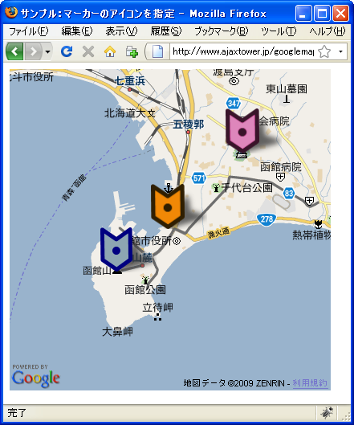

マーカーのアイコンを指定
地図上に表示されるマーカーに自分で作成したアイコンを指定する方法を確認します。
アイコンはGIconクラスのオブジェクトとして作成されます。コンストラクタ関数は次のように定義されています。
GIcon(copy?:GIcon, image?:String)
新しいアイコン オブジェクトを作成します。別のアイコンがオプションの copy 引数に指定されると、そのプロパティがコピーされます。指定されない場合は空 のままです。省略可能な引数 image は image プロパティの値を設定します。
GIconクラスのオブジェクトを作成しマーカーに設定します。なおマーカーのデフォルトで使用されるアイコンはG_DEFAULT_ICONという定数を使って表すことができます。
引数は2つ用意されていますがどちらも省略可能で既にあるアイコンのコピーを作成する場合に使用します。1番目の引数にはコピーしたいGIconクラスのオブジェクトを指定し、2番目の引数にはアイコン画像のURLを指定します。
var icon = new GIcon(other_icon, "./img/image.png");
この場合、別のアイコンをコピーし、画像だけを差し替えたアイコンを作成します。
新規にアイコンを作成する場合は次のように引数無しでまずGIconクラスのオブジェクトを作成します。
var icon = new GIcon();
続いてGIconクラスの各プロパティに値を設定していきます。プロパティは数多くありますのでここではその一部を紹介します。
| プロパティ | タイプ | 説明 |
|---|---|---|
| image | String | アイコン画像のURL |
| shadow | String | 影の画像のURL |
| iconSize | GSize | アイコンのサイズ |
| shadowSize | GSize | 影のサイズ |
| iconAnchor | GPoint | アイコン画像左上隅を基準とした時のアイコンが示す座標 |
では順に確認していきます。
今回使用するアイコンの画像として下記のものを用意しました。
アイコンと影の画像のサイズは異なっていても構いません。表示される時には2つの画像を左上で合わせて表示されます。
アイコンと影の画像ファイルをimageプロパティとshadowプロパティの値に指定します。
var markerIcon = new GIcon(); markerIcon.image = "./img/marker.png"; markerIcon.shadow = "./img/shadow.png";
またアイコンと影の画像のサイズをiconSizeプロパティとshadowSizeプロパティの値に指定します。サイズの指定はGSizeクラスのオブジェクトで指定します。GSizeクラスはwidthプロパティとheightプロパティの2つの値を保持するクラスで次のように指定します。
var markerIcon = new GIcon(); markerIcon.image = "./img/marker.png"; markerIcon.shadow = "./img/shadow.png"; markerIcon.iconSize = new GSize(42, 56); markerIcon.shadowSize = new GSize(70, 56);
GMarkerクラスのオブジェクトを作成する時にマーカーを表示する座標を指定しますが、指定した座標がマーカーのアイコンのどの位置に表示するのかを指定します。例えばマーカーが矢印のような形状をしていた場合、矢印の先端が指定した座標に表示されるようにマーカーを表示すると分かりやすくなります。
位置の指定はGPointクラスのオブジェクトで指定します。GPointクラスはxプロパティとyプロパティの2つの値を保持するクラスで、アイコン画像の左上隅からの位置で指定して下さい。
var markerIcon = new GIcon(); markerIcon.image = "./img/marker.png"; markerIcon.shadow = "./img/shadow.png"; markerIcon.iconSize = new GSize(42, 56); markerIcon.shadowSize = new GSize(70, 56); markerIcon.iconAnchor = new GPoint(21, 56);
これでアイコンの作成は完了です。
※なお影は必要なければ省略しても構いません。
アイコンを指定したマーカーの作成
アイコンの指定してマーカーを作成するにはGMarkerクラスのコンストラクタ関数の2番目の引数で指定します。
GMarker(latlng:GLatLng, opts?:GMarkerOptions)
2番目の引数はGMarkerOptionsクラスのオブジェクトを指定します、このクラスはコンストラクタ関数が用意されていませんのでオブジェクトリテラルを作成します。
var opts = {プロパティ名:値, プロパティ名:値, ...};
GMarkerOptionsクラスで定義されているプロパティはいくつかありますが、アイコンを指定する場合にはiconプロパティを使います。
iconプロパティ
このクラスにアイコンを選択します。指定されない場合は、G_DEFAULT_ICON が 使用されます。 値： GIcon
引数には事前に作成したGIconクラスのオブジェクトを指定して下さい。
実際には次のように記述します。
var map = new GMap2(document.getElementById("map"));
map.setCenter(new GLatLng(35.172304,136.908306), 15);
var point = new GLatLng(35.680481,139.767036);
var markerIcon = new GIcon();
markerIcon.image = "./img/marker.png";
markerIcon.shadow = "./img/shadow.png";
markerIcon.iconSize = new GSize(42, 56);
markerIcon.shadowSize = new GSize(70, 56);
markerIcon.iconAnchor = new GPoint(21, 56);
var opts = {icon:markerIc};
var marker = new GMarker(point, opts);
map.addOverlay(marker);
上記のようにすることで自作のアイコンを使ってマーカーを表示することができます。
サンプルプログラム
では試してみます。
function initialize() {
if (GBrowserIsCompatible()) {
var map = new GMap2(document.getElementById("map_canvas"));
map.setCenter(new GLatLng(41.7724,140.72628), 12);
var markerIcon1 = new GIcon();
markerIcon1.image = "./img/icon.png";
markerIcon1.shadow = "./img/shadow.png";
markerIcon1.iconSize = new GSize(42, 56);
markerIcon1.shadowSize = new GSize(70, 56);
markerIcon1.iconAnchor = new GPoint(21, 56);
var markerIcon2 = new GIcon(markerIcon1, "./img/icon2.png");
var markerIcon3 = new GIcon(markerIcon1, "./img/icon3.png");
var opt1 = {icon:markerIcon1};
var opt2 = {icon:markerIcon2};
var opt3 = {icon:markerIcon3};
var marker1 = new GMarker(new GLatLng(41.75886,140.703535), opt1);
var marker2 = new GMarker(new GLatLng(41.79672,140.757179), opt2);
var marker3 = new GMarker(new GLatLng(41.772644,140.725315), opt3);
map.addOverlay(marker1);
map.addOverlay(marker2);
map.addOverlay(marker3);
}
}
<!DOCTYPE html "-//W3C//DTD XHTML 1.0 Strict//EN"
"http://www.w3.org/TR/xhtml1/DTD/xhtml1-strict.dtd">
<html xmlns="http://www.w3.org/1999/xhtml">
<head>
<meta http-equiv="content-type" content="text/html; charset=UTF-8"/>
<title>サンプル：マーカーのアイコンを指定</title>
<script src="http://maps.google.com/maps?file=api&v=2&key=(key)&sensor=false"
type="text/javascript" charset="utf-8"></script>
<script src="./js/code2_1.js" type="text/javascript"></script>
</head>
<body onload="initialize()" onunload="GUnload()">
<div id="map_canvas" style="width: 400px; height: 400px"></div>
</body>
</html>
ではブラウザで上記のURLを見てみます。

今回は新規のアイコンを作成し、そのアイコンをコピーして画像を入れ替えたアイコンを2つ作成しました。
( Written by Tatsuo Ikura )

著者 / TATSUO IKURA
初心者～中級者の方を対象としたプログラミング方法や開発環境の構築の解説を行うサイトの運営を行っています。